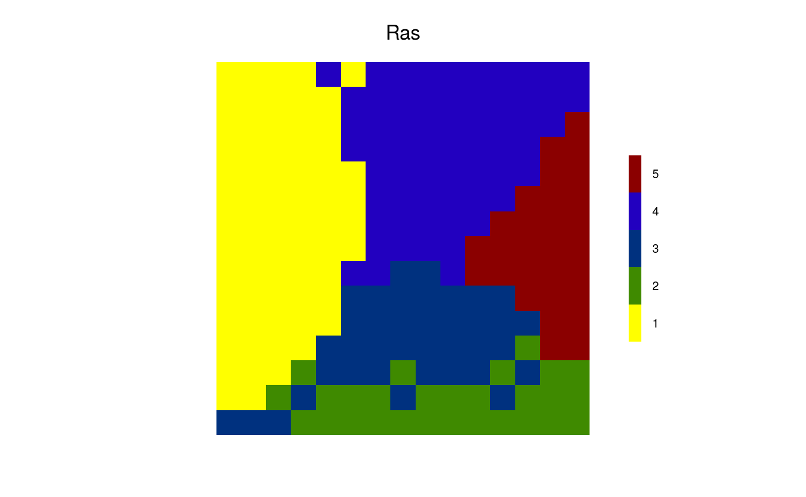
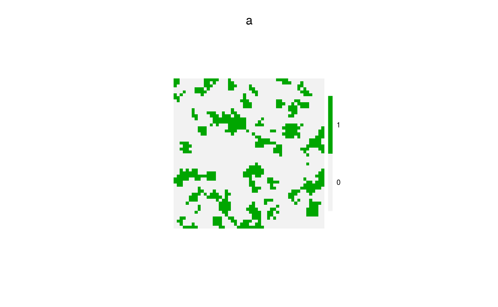
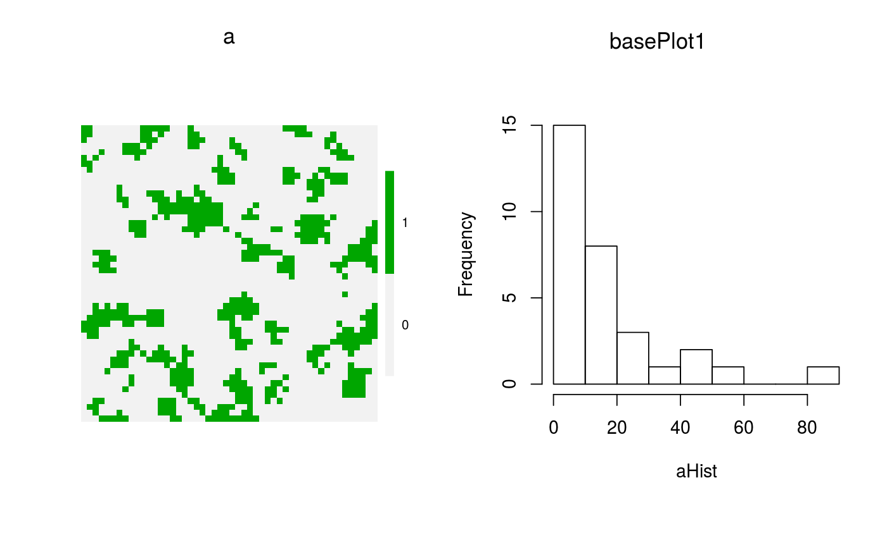

Produces a raster of random polygons.
These are built with the spread function internally.
randomPolygons(ras = raster(extent(0, 15, 0, 15), res = 1, vals = 0), numTypes = 2, ...)
| ras | A raster that whose extent will be used for the randomPolygons |
|---|---|
| numTypes | Numeric value. The number of unique polygon types to use. |
| ... | Other arguments passed to spread. No known uses currently. |
A map of extent ext with random polygons.
library(quickPlot) set.seed(1234) Ras <- randomPolygons(numTypes = 5) if (interactive()) { clearPlot() Plot(Ras, cols = c("yellow", "dark green", "blue", "dark red")) }library(raster) # more complex patterning, with a range of patch sizes a <- randomPolygons(numTypes = 400, raster(extent(0, 50, 0, 50), res = 1, vals = 0)) a[a<320] <- 0 a[a>=320] <- 1 suppressWarnings(clumped <- clump(a)) # warning sometimes occurs, but not important aHist <- hist(table(getValues(clumped)), plot = FALSE) if (interactive()) { clearPlot() Plot(a) Plot(aHist) }